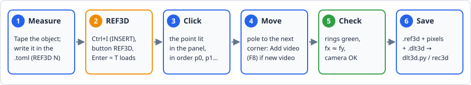
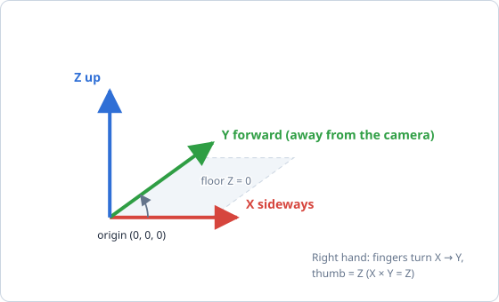
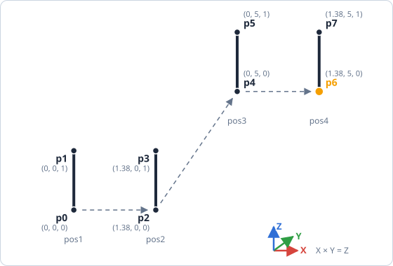
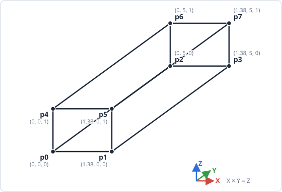
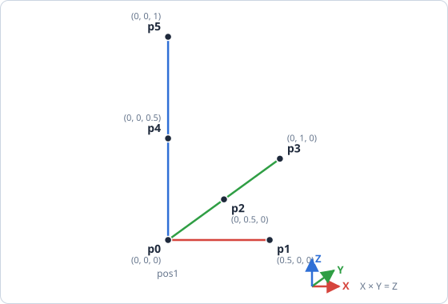
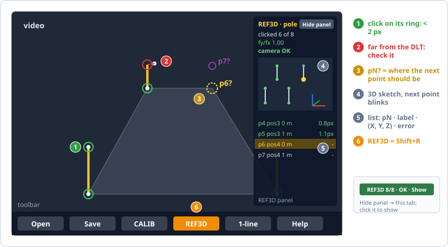
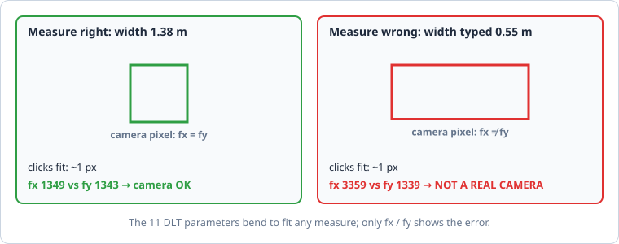

REF3D calibration guide (illustrated)
Version: 0.4.18 Date: 15 November 2026 Updated: 15 November 2026 Authors: Prof. Dr. Paulo R. P. Santiago, Rafael L. M. Monteiro Project: vailá - Multimodal Toolbox
Keep this page open next to getpixelvideo while you calibrate. In the window, F1 (with REF3D on) or the Guide button of the REF3D panel opens it. Reference of the tool: REF3D builder; keys: getpixelvideo.

1. What you are calibrating
A DLT3D calibration links the 3D position of known points (metres, in the .ref3d) to their pixels in the video. With it, rec3d turns the pixels of any marker into metres. You need at least 6 points that are not all on one plane; use 8 to 12, spread over the volume where the movement happens.
2. The axes and the origin

- Put the origin
(0, 0, 0)on the floor at a corner you can see in every video. - X along the width, Y along the length (direction of walking or running), Z up. Units: metres.
- Swapping X and Y makes a left-handed system: the 3D reconstruction comes out mirrored.
3. Choose the object (template)
The REF3D button builds the list of points from the measures of the object. The drawings below come from the same code: the numbers p0, p1, … are the order in which REF3D asks you to click.

0, 1, positions rect 1.38 x 5: for each corner, the bottom mark then the top one. The corners go 0,0 → X,0 → 0,Y → X,Y (dashed arrows). The orange point (p6) is the next one, as in the panel.
1.38 x 5 x 1: floor corners first (p0–p3), then the top (p4–p7); inside each layer Y, then X. Marks along an axis add the points of the edges.
0.5, Y 0.5, 1, Z 0.5, 1: origin, then the X marks, the Y marks, the Z marks. Like the pole, it can be moved over a rectangle.L loads a .ref3d you already have (points of any shape).
The measures go in a template file
Instead of typing the measures in the window, write them once in ref3d_template.toml, next to the calibration videos (one file serves every calib_pos* video of the folder). In the first REF3D dialog, N writes the file with the three objects (pole, box, triad) and opens it in the text editor; set kind, fill in the section of your object, save. Then REF3D + Enter: T is the default and the dialog shows what the file holds (T = Template ref3d_template.toml: pole, marks 0, 1 m, 4 positions). A typo in a key or value is named in the message ([pole] unknown key 'mark'). The pole of the walkway:
kind = "pole" # "pole", "box" or "triad"
[pole] # a rod with marks, stood at several floor positions
marks = [0, 1] # heights of the marks, bottom to top
rect = [1.38, 5] # the 4 corners of X x Y: 0,0 / X,0 / 0,Y / X,Y
# positions = [[0, 0], [1, 0], [0, 5]] # or your own list (x, y), in click orderOptions 1, 2, 3 (type the measures in dialogs) still work. Without a window: python -m vaila.ref3d_builder --new-template ref3d_template.toml, then --template-file ref3d_template.toml -o calib.ref3d.
4. Step by step in getpixelvideo
- Measure the object with a tape: the width and length of the rectangle, the heights of the pole marks. Write them in
ref3d_template.toml(REF3D N creates it; see the template). A wrong measure is the most common error (section 6). - Open the first calibration video. Press Ctrl+I (INSERT), then the REF3D button (or Shift+R, or CALIB option 4), and Enter: T loads the template. (Or 1 Box, 2 Pole, 3 Triad to type the measures, L to load a
.ref3d.) - Click the point that is lit in the panel (orange in the list, blinking in the 3D sketch); the info line of the toolbar says
click = pN label (x, y, z). Then the next one, in order. - Point hidden in this video? A leaves it empty and moves on. Wrong click? Right click removes the last one; a click on a row of the list selects that point to place it again.
- Move the pole to the next corner. If that position is in another video, press Add video (F8): the points already clicked go along and the list continues.
- Check the rings and the camera in the panel (sections 5 and 6).
- Save (or Esc): the pixels, the
.ref3dand the.dlt3dare written next to the video (section 8).
5. Reading the screen

pN? shows where the points not clicked yet should be: a good guide for the next click. Hide panel turns the panel into a small tab that still shows the count and the verdict.6. Is it a real camera?

| Panel says | Meaning | What to do |
|---|---|---|
| camera OK, rings green | measures and clicks agree | Save |
| one ring red | that click is off | select the row, click again |
| NOT A REAL CAMERA, rings green | a measure of the object is wrong, or X and Y are swapped | measure again; check the order of the corners |
| needs 6 / all points on one plane | too few points, or all on the floor | add points with height (pole top, Z arm) |
7. Several videos (one position per video)
When the pole was filmed at each corner in a different video (for example calib_pos1 … calib_pos4), click the points of pos1 in the first video, press Add video (F8), open the next one, and go on: the list continues at the next point. The camera must not move between the videos.
8. Files and next step
| File (next to the video on screen) | Content |
|---|---|
<video>_markers_1_line.csv + .toml | the pixels of p0, p1, … and where each one was clicked |
<video>_markers_1_line.ref3d | the 3D points, in metres |
ref3d_template.toml (folder of the videos) | the measures you fill in; REF3D N writes it, T loads it |
<video>_markers_1_line.template.toml | the measures used, in the same format (T loads it when there is no ref3d_template.toml) |
<video>_markers_1_line.dlt3d | the 11 DLT3D coefficients |
Then use the .dlt3d in DLT/REC 2D-3D (rec3d), or make it again from the pair .csv + .ref3d with dlt3d.py. Files that already existed are copied to .vaila_markers_history/ first.
9. Common mistakes
- A measure typed wrong (0.55 instead of 1.38): rings green, camera NOT REAL. Measure again.
- X and Y swapped, or the corners clicked in another order than 0,0 → X,0 → 0,Y → X,Y: follow the lit point in the panel.
- All points on the floor: no 3D calibration. Use the top of the pole or the Z arm.
- Fewer than 6 points, or 6 exactly: no check. Use 8 to 12.
- A hidden point clicked at a guess: use A to leave it empty.
- Strong lens distortion (wide angle): the 11-parameter DLT does not model it; keep the points away from the image edges.
The drawings are schematic (a fixed oblique view, not the view of your camera). They are made by bin/make_ref3d_guide_svgs.py from vaila/ref3d_builder.py, so the order of the points is the one the tool uses.